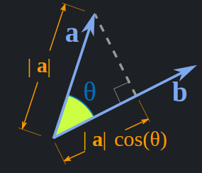
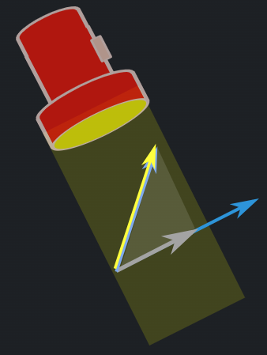

The cross product of two vectors can be intuitively understood as a way to capture both the >spread between the vectors and the direction perpendicular to the plane they form. The magnitude of the cross product equals the area of the parallelogram defined by the two vectors. If the vectors are almost parallel, the “spread” (and hence the area) is small, and if they are perpendicular, the area is maximized.
Given 2 vectors $a,b$ with an angle $\theta$ between them, the cross product is $a \times b = c$ where $c$ is a vector that is perpendicular to both $a$ and $b$. Its direction is given by the right hand rule and its magnitude (size) is given by the following equation: $$ |c| = |a||b|sin\theta $$ The cross product formula for 2 vectors: $$ \begin{pmatrix} a \\ b \\ c \end{pmatrix} \times \begin{pmatrix} d \\ e \\ f \end{pmatrix} = \begin{pmatrix} bf-ce \\ cd-af \\ ae-bd \end{pmatrix} $$